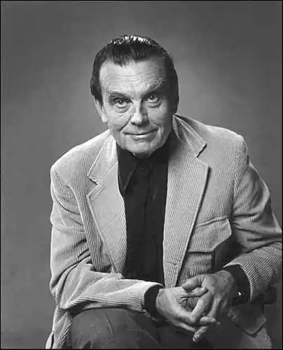
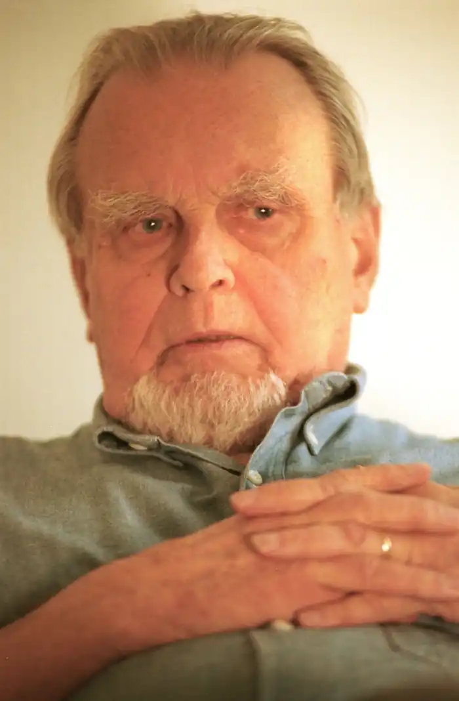

МІЛОШ, Чеслав (Milosz, Czeslaw — 30.07.1911, с. Шатейняй, Литва — 17.08.2004, Краків) — польський письменник, лауреат Нобелівської премії 1980 р.Чеслав Мілош народився у Кедайнському повіті Литви, у с. Шатейняй — маєтку його матері Вероніки. Першим враженням дитинства для майбутнього поета стала світова війна. Його батька, Олександра Мілоша, інженера з будівництва доріг і мостів, мобілізували у цій якості і йому довелося працювати на лінії фронту. Наприкінці 1917 р. Мілоші перебували у Ржеві, а на початку 1918 р. — у Юр'єві (тепер Тарту). Потім перебрались у Литву. У Вільно Мілош закінчив польську гімназію, а в 1929 р. вступив на гуманітарний відділ Віденського університету, перевівшись згодом на відділ права. У роки навчання він увійшов у віденське літературне угруповання "Жагари".
На 1933 р. припадає поетичний дебют Мілоша — "Поема про застиглий час" ("Poemat о czasie zastyglym"). Від цієї "Поеми..." , у якій виразно прослідковуються найрізноманітніші впливи, поет згодом відмовиться, заявивши при цьому: "Мій перший поетичний том був... спробою самознищення і перетворення у людину "натовпу". Після отримання диплому права (1934) Мілош поїхав у Париж як стипендіат однієї з культурних фундацій, а після повернення влаштувався радіожурналістом (Вільнюс, Варшава).
Прикметною в аспекті творчого становлення стала наступна поетична збірка Мілоша — "Три зими" (1936), яка дала привід твердити про "класицизм" Мілоша. Уже в цій книжці відчутний характерний для поета ліричний тон, зорієнтованість на загальнолюдську проблематику. Центральне місце у "Трьох зимах" займає катастрофізм — художній напрям, який вирізнявся метафізичними, релігійними та політичними пошуками. Попри мізерний наклад збірки (300 прим.) вона набула розголосу навіть за межами Литви. Через рік Мілош переїхав у Варшаву, де його й захопила Друга світова війна. З перших днів окупації й аж до визволення країни поет був активним учасником польського Руху Опору (зокрема, уклав і видрукував на гектографі антологію "Нескорена пісня"). Роки окупаційного лихоліття не могли не позначитися на всьому подальшому житті і творчості Мілоша. Хрестоматійним став вірш "Сатро cli Fiori", написаний 1943 р. у Варшаві, під час Страсного тижня, де зіставлення спалення Дж. Бруно у Римі на Площі Квітів і загибелі варшавських євреїв у палаючому повсталому гетто переростає у символ виняткової художньої сили. Не менш значимим у плані поетичного осмислення й узагальнення місця людини та митця у час воєнного лихоліття (і при цьому не менш трагічним) є вірш Мілоша "Втеча": Як ми відходили з палаючого міста,Як оглядалися на нього з далини,Я мовив: "Хай наш слід трава покриє чиста,Хай змовкнуть в полум'ї пророки-крикуни,Хай мертві неживим розкажуть, що настало, Зробити плем'я нам призначено — від злаІ щастя звільнене, те плем'я, що дрімало.Ходім!" Земля вогнем відкрита нам була.(Пер. Д. Павличка)У 1945 р. вийшла друком поетична збірка "Порятунок"("Ocalenie"), куди ввійшли вірші довоєнного і воєнного часу. Ця збірка, у якій органічно переплелися тема катастрофи, тема війни з її болем, вогнем, кров'ю та людським терпінням і "шатейняйські" спогади дитинства, збагачені ліричною іронією, значною мірою вплинула на весь подальший розвиток польської культури взагалі і поезії зокрема. Після війни Мілош певний час працював у редакції краківського журналу " Творчість", згодом — на дипломатичній роботі у США та Франції. Коли стало зрозуміло, що на зміну гітлерівській окупації прийшла друга, радянська, поет вирішив залишитися на Заході, замешкавши спочатку у Парижі (1951 — 1959), а потім — у США. Доеміграційний період творчості Мілоша можна означити "періодом прози". У 1952 р. вийшла друком книга есеїстики "Поневолений розум" ("Zniewolony umysl") — докладний аналіз суспіль-но-політичної та культурної ситуації у тогочасній Європі та роздуми про розвиток культури в епоху ідеології. У повісті "Здобуття влади ("Zdobycie wladzy", 1953) на прикладі трагедії варшавського повстання 1944 p. Мілош розповів пре природу та небезпеку тоталітаризму, що знищує в людині особистість, а в автобіографічній повісті "Долина Ісси" ("Dolina Issy", 1955) письменник згадує своє дитинство та рідну Литву. За книгу "Захоплення влади" М. був пошанований Європейською літературною премією і зажив слави на Заході. У 1960 р. на запрошення університетів Каліфорнії письменник перебрався у США, де отримав посаду професора відділення слов'янських мов і літератур в університеті Берклі (Каліфорнія). Через десять років після приїзду він прийняв американське громадянство, а в аспекті творчості став визнаним світовим поетом. Окрім цілого ряду поетичних збірок ("Король Попелі та інші вірші" — 1962; "Місто без імені" — "Miasto bez imienia". 1969; "Там, де сходить і заходить сонце" — "Gdzie wschodzi sloiice і kejdy zapada", 1974 та ін.), Мілош займався перекладами із польської і польською мовою В. Шекспіра, Дж. Мільтона. Ш. Бодлера, Т. С. Еліота та ін., писав численні есе, літературознавчі роботи і публіцистику, поміж яких слід виокремити ґрунтовне наукове дослідження "Історія польської літератури ("The History of Polish Literature", 1969). У 1980 p. Мілош був пошанований Нобелівською премією з літератури "за дохідливе змалювання незахищеності людини в сучасному світі... за твори, що збагачують нас невідомим раніше життєвим досвідом". Як цілком слушне відмітив Д. Павличко, "постать Мілоша виділяється на тлі найвидатніших польських письменників XX ст. як образ творця і мислителя, що поєднав мистецтво поезії з мистецтвом філософії". Після соціально-політичних змін у Польщі у 90-х pp. Мілош повернувся на батьківщину, де замешкав у Кракові. Брав активну участь у літературному та суспільному житті країни. В останні роки поет мав проблеми з кровообігом. Помер у Кракові суботнього ранку 14 серпня 2004 р. у віці 93 років. Похований у монастирі отців-паулінів, що в історичному районі Кракова Казімеж. Українською мовою окремі твори Мілоша переклали І. Качуровський, Б. Чопик, Д. Павличко, Я. Сенчишин та ін. Б. Щавурський